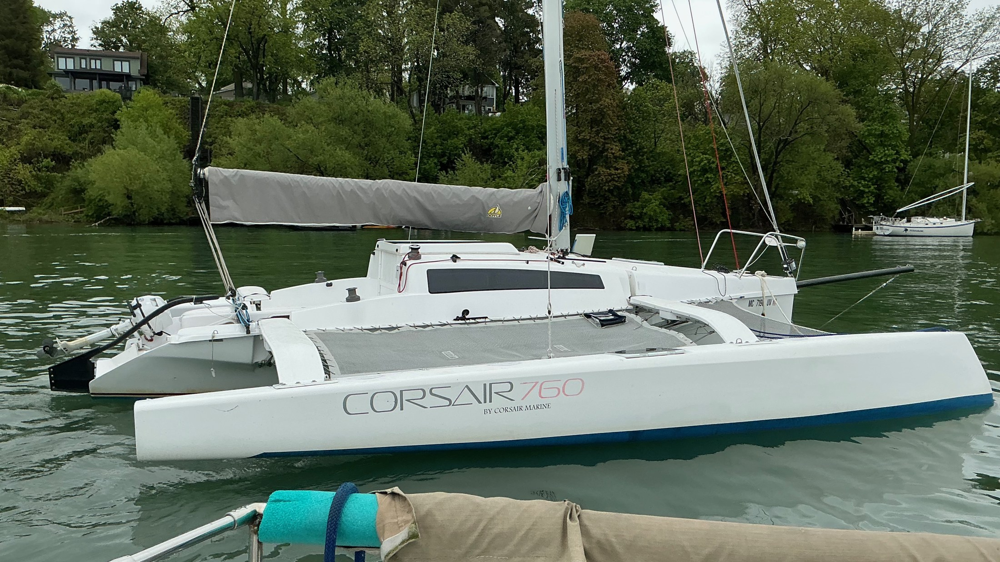
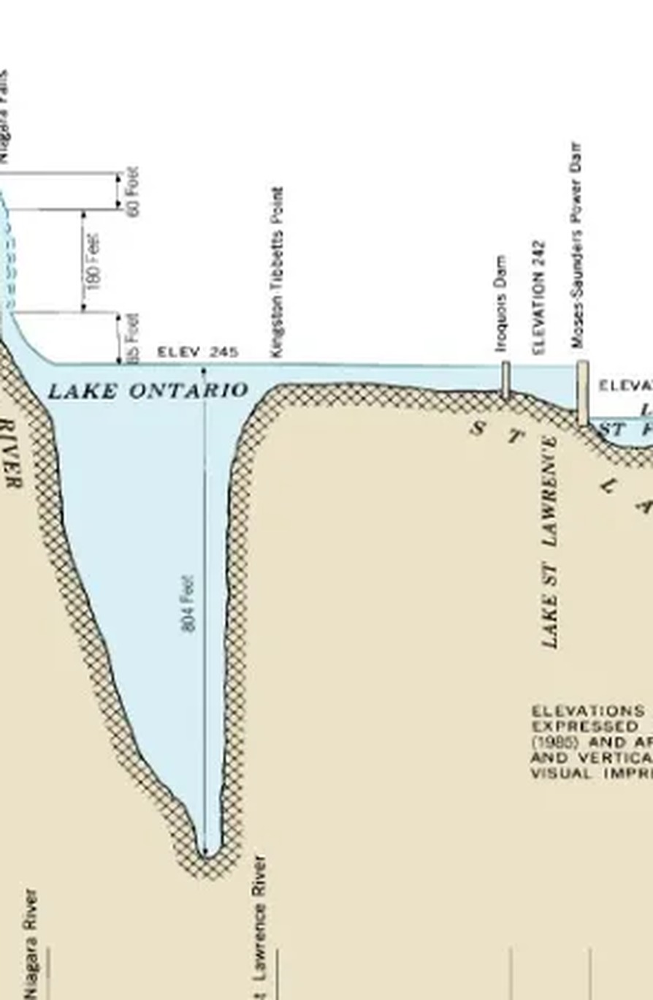
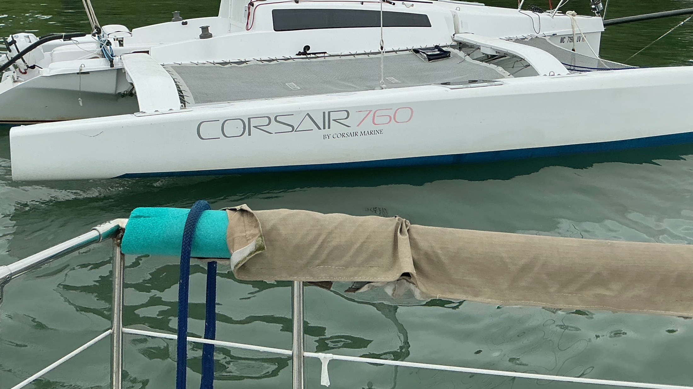
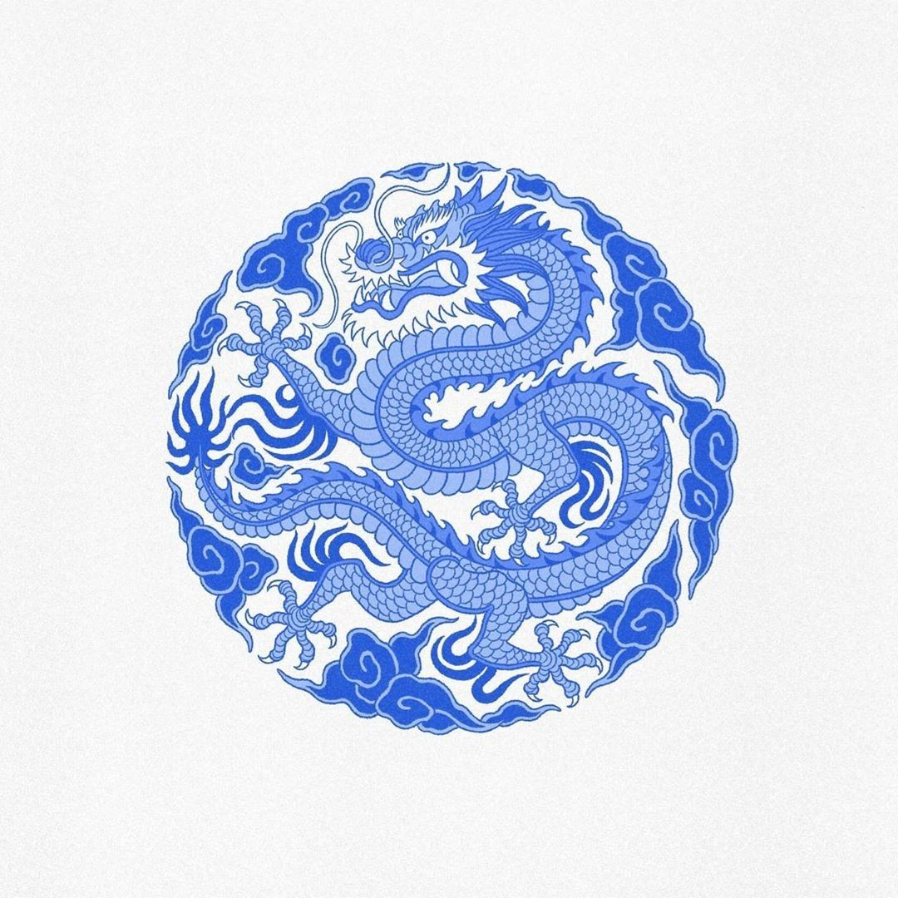
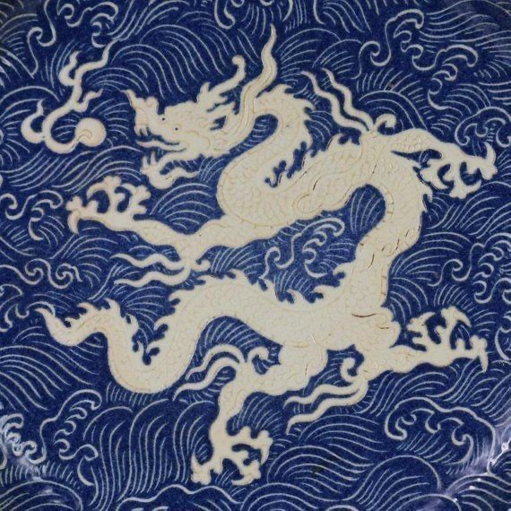

24.07.2026
Dragon's Pearl
An illustration for the amas — and the sail, if it proves possible — of a Corsair trimaran on Lake Ontario.
The Reunion
Joshua and Grace found their way back into Enrique's life after years apart — the kind of reconnection that feels less like catching up and more like continuing a conversation that never really stopped. When they asked him to help give shape to something this personal, it landed as a quiet honour: to be trusted, again, with the things that matter most.
The Convergence
This project didn't arrive on its own. It's the meeting point of a family looking for an anchor and a greater purpose, a boat already on the water, a lake with a quiet history of its own, and old friends finding each other again at exactly the right moment.
The Living Water
Lake Ontario runs 244 metres deep in places, with a basin that drops sharply rather than sloping gently — leaving little room for coarse matter to settle, and a shorter, more direct path between the earth's healing energies and the surface. Joshua and Grace's family home rests right at its edge, close to water that never stops renewing itself.

A steep basin, not a gradual slope.

The Vessel
The bridge between the family and the lake's healing force — and the place where Anthony and Joshua's bond as sailors keeps deepening, sail after sail.
The Symbol Revealed
A pearl is small, precious, and formed slowly, layer by layer, inside something much larger than itself. That's the boat: Dragon's Pearl, resting on the dragon — Lake Ontario and its quiet, healing nature. A vessel this size, carrying a symbol this large, becomes the heart of everything the project is about.


The Calling of the Artist
Enrique's role is to give the pearl its shape — an illustration carried across the amas, and the sail if it proves possible, so the symbol can do its work in the world. Not decoration, but a catalyst: something for the family, and everyone who steps aboard, to feel every time they're on the water.
The Weaving
This is meant to stay light. A few calls, a handful of questions, sketches shared back for a reaction rather than a committee review. Enrique carries the weight of the work — the family's part is simply to stay close enough to recognise themselves in it.
The Horizon
Once Dragon's Pearl is finished and afloat, it doesn't have to be the end of the story. The same symbol that gives the boat its meaning could open doors — workshops on the water, gatherings around what the lake offers, even a book one day. The illustration is a beginning, not a full stop.
The Timeline
The Quotation
Full illustration across both amas, plus the sail. This option depends on Joshua confirming the sail can be printed — once that's settled, it's a go.
Full illustration across both amas. Confirmed and ready to begin whenever you are.
enriquespacca.com
What do you imagine this project could become?
Whatever the answer, Dragon's Pearl starts here — with the amas, the water, and the story you've already been living. Thank you for trusting me with it.
Árbol {Enrique Spacca}